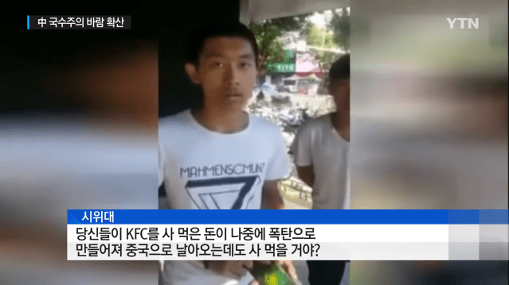
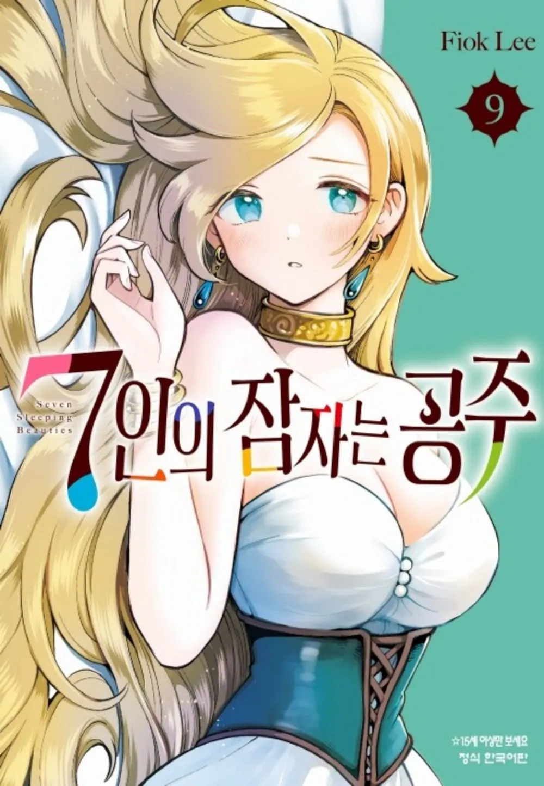
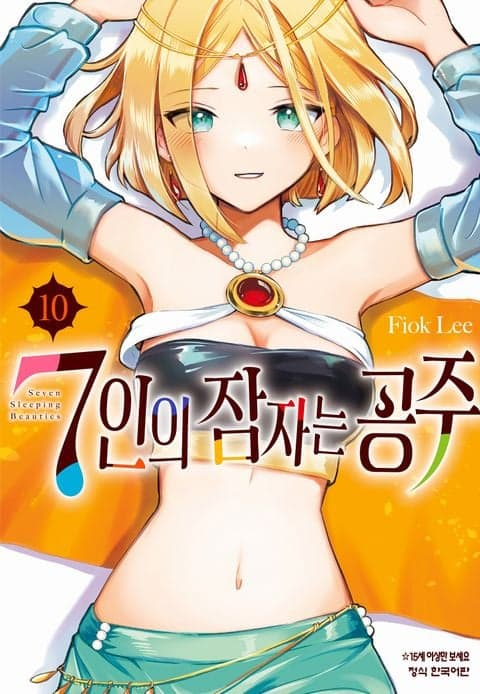
애니화 예정 작품인
한국에 10권까지 정발한 일본 만화 [7인의 잠자는 공주]
이 작품의 저자 Fiok Lee는 조금 특이한 이력을 갖고 있는데...
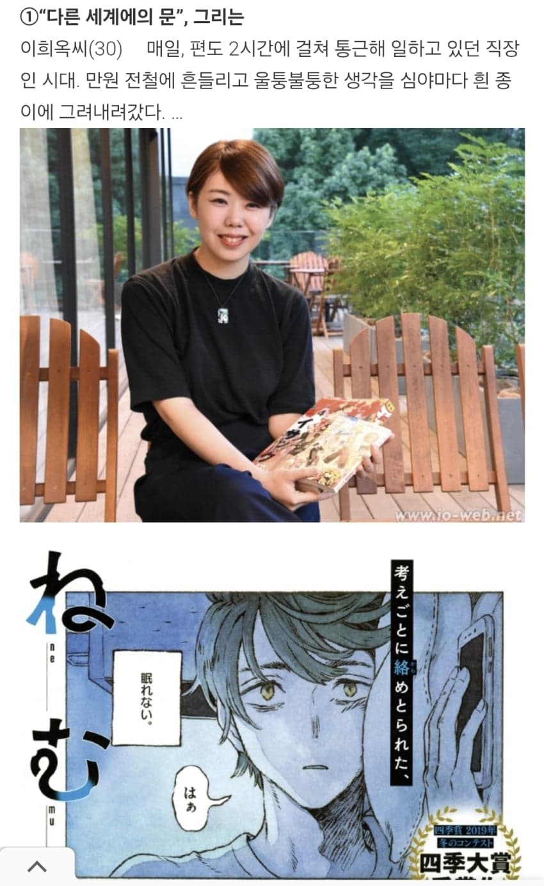
바로 재일 한국인 이희옥 씨(현 36세 추정)라는 것
자이니치라면 차고 널렸다고?
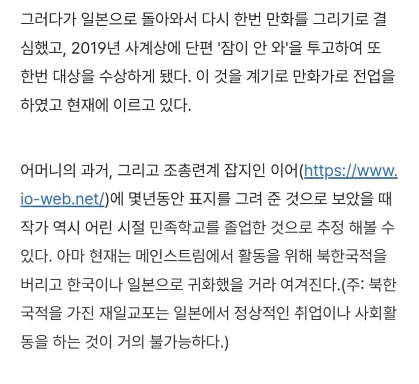
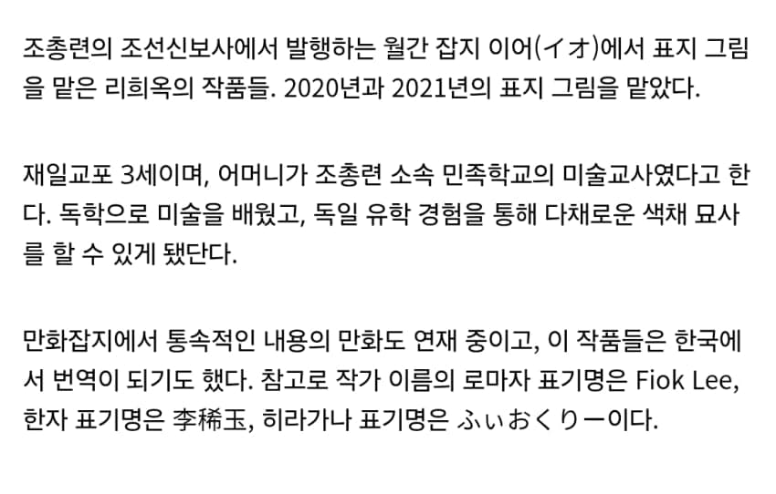
이희옥 씨는 조총련 계열
어머니도 조총련 교사
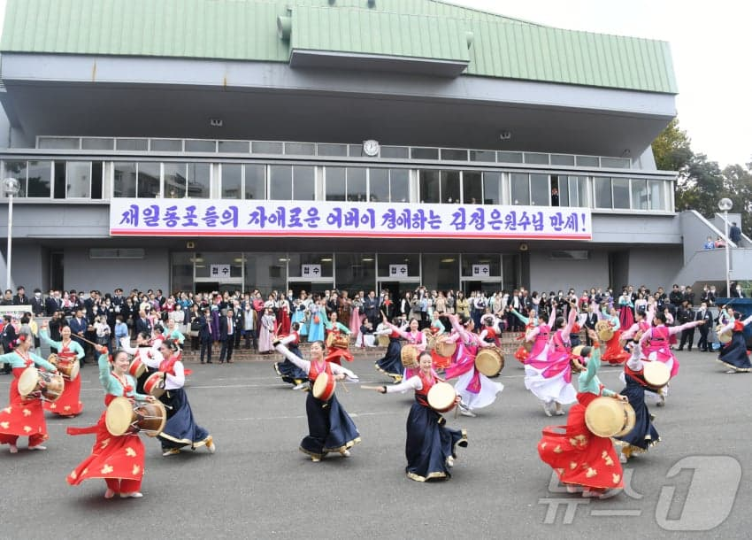
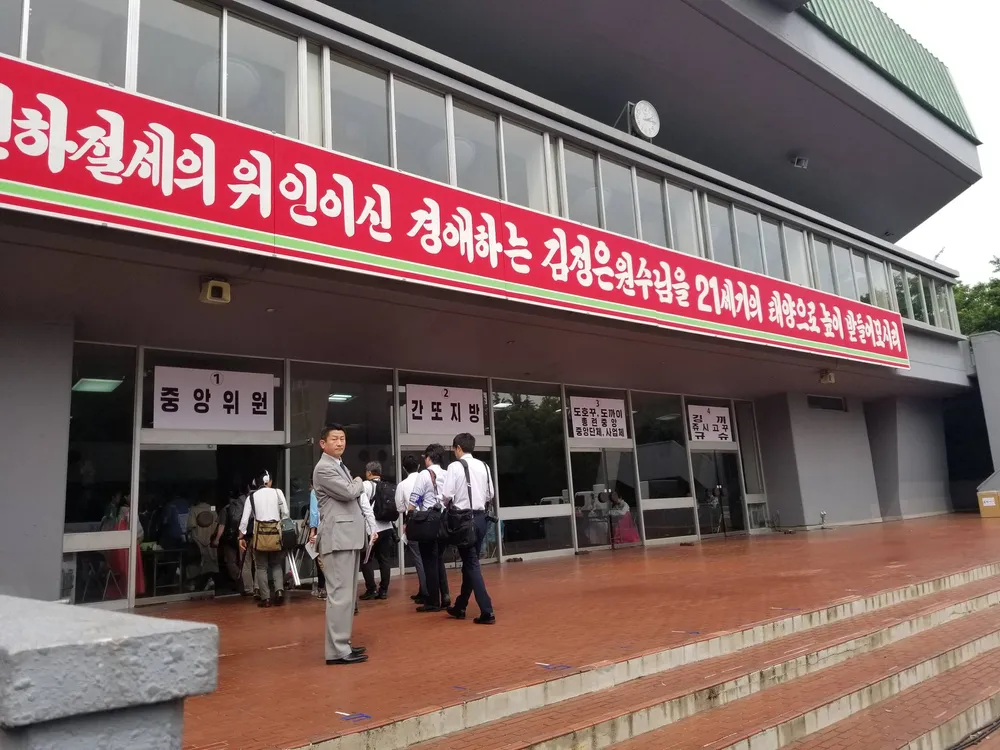
조총련의 악명은 싱붕이들도 한 번쯤은 들어봤을 거고
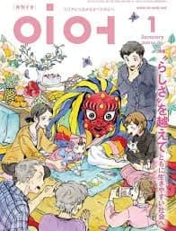
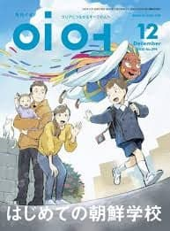
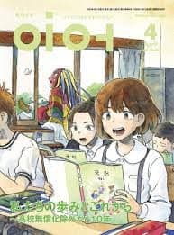
이희옥 씨는 조총련 잡지도 꽤 오랫동안 표지를 그려온 듯하다
지금은 뚜렷한 행보는 밝혀지지 않았지만
아마 일본으로 귀화한 걸로 추정된다고..